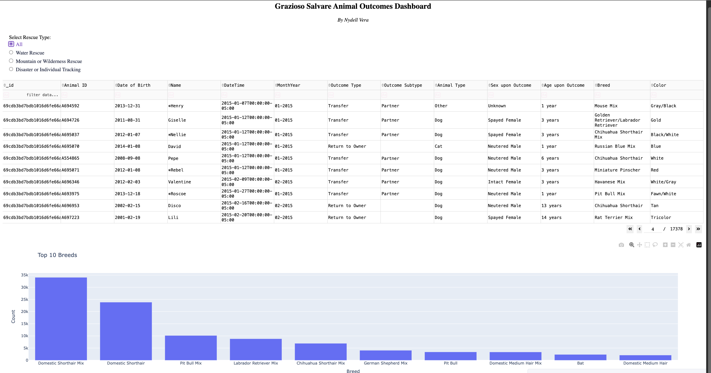
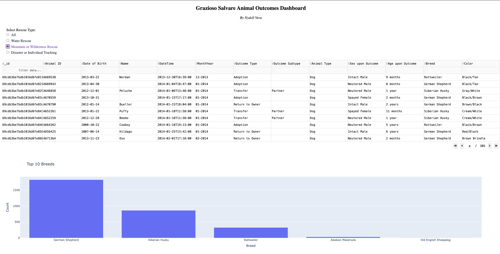

About Me
I am a Computer Science graduate with a concentration in Software Engineering and a strong interest in data analytics, data science, and business intelligence. My portfolio focuses on using SQL, Python, Excel, Tableau, and databases to clean data, analyze trends, build dashboards, and communicate insights clearly.
My projects include real-world style analysis involving gas price trends, retail sales performance, animal shelter data, and predictive modeling. I enjoy turning raw data into useful insights that can support better business decisions.
Technical Skills
Analytics
Excel, Pivot Tables, Data Cleaning, Reporting, Dashboard Design
Programming
Python, SQL, Java, HTML, CSS
Databases & Tools
PostgreSQL, MySQL, MongoDB, Tableau, GitHub
Data Science
Pandas, NumPy, Scikit-Learn, Visualization, Machine Learning Basics
Projects
California Gas Price Analysis
Analyzed more than 15,000 gas price records across 300+ California cities to identify regional pricing patterns, fuel grade differences, and cost disparities between major metropolitan areas.
- Cleaned and validated raw gas price records using SQL by removing invalid, missing, and unrealistic price values.
- Created SQL queries to compare average gas prices by city, fuel grade, and region.
- Built Excel summary reports and Pivot Tables to support analysis.
- Designed Tableau dashboards to visualize pricing trends and compare major cities.
- Identified that San Francisco’s average gas prices were approximately 12% higher than San Diego’s.
Walmart Sales Analysis
Analyzed Walmart sales data to identify sales trends, top-performing categories, seasonal patterns, and business insights that could support retail decision-making.
- Cleaned and organized retail sales data for analysis.
- Analyzed sales performance across stores, departments, and time periods.
- Used Excel and SQL to summarize key metrics and identify high-performing areas.
- Created dashboard visuals to communicate trends and patterns clearly.
Animal Shelter Analytics Dashboard




Built a Python and MongoDB project that combines a CRUD data layer with an interactive dashboard for exploring animal shelter data. The backend supports creating, reading, updating, and deleting records while the dashboard displays filtered shelter data through visualizations.
- Developed CRUD functionality using Python and PyMongo.
- Used MongoDB to store and query animal shelter records.
- Created an interactive dashboard to filter and visualize shelter data.
- Added validation to protect important fields such as animal type, breed, and name.
- Moved database credentials into environment variables to improve security.
Loan Default Prediction
Developed a data science project focused on predicting loan default risk using customer and financial data. The project includes data cleaning, exploratory analysis, model building, and model evaluation.
- Cleaned and prepared loan data for machine learning analysis.
- Explored relationships between income, credit history, loan amount, and default risk.
- Built classification models using Python and Scikit-Learn.
- Evaluated model performance using accuracy, precision, recall, and ROC-AUC.
- Identified important factors that may contribute to loan default risk.
Resume
View my resume to learn more about my education, technical skills, projects, and professional experience.
Contact
I am currently seeking entry-level opportunities in data analytics, business intelligence, and data science.
Email: nydell03@gmail.com
GitHub: github.com/NydellV
LinkedIn: linkedin.com/in/nydell-f-vera